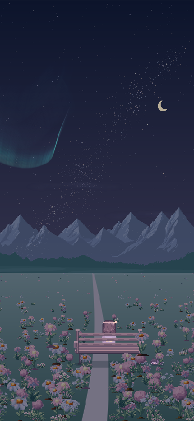
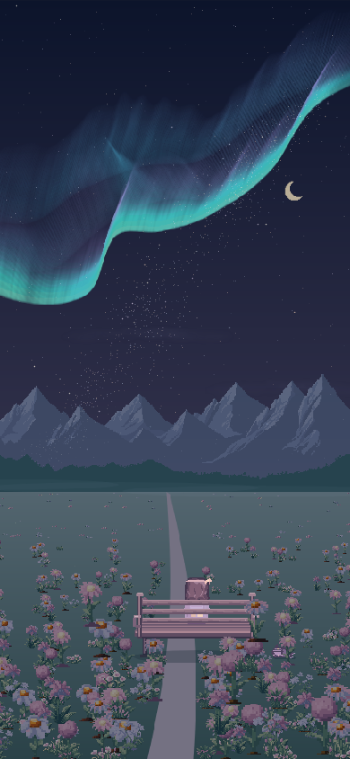
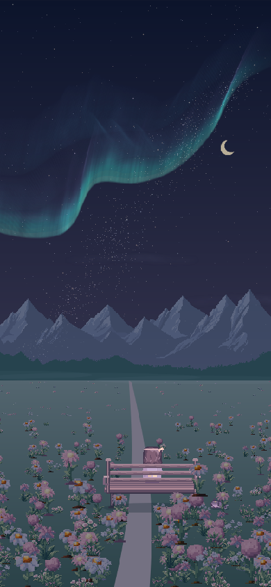

一场只为风景停留的极光。
这一轮只调整独立极光页面：沿参考图重绘开放光弧与蓝紫薄纱、修正小曦与长椅的前后关系，并让录屏时的游戏选项全部消失。普通湖畔、屋顶、窗前和庄园主地图继续保持原来的纯净星空。
点击「关闭全部选项」后，标题、文字、按钮全部隐藏；双击画面或按 Esc 恢复。这里隐藏的是游戏界面，浏览器自带的地址栏由浏览器控制。

实机时间 3.5 秒，光从左侧慢慢亮起。

实机时间 27 秒，青绿色亮缘与斜向光丝完整舒展。

实机时间 69 秒，远端先散去。